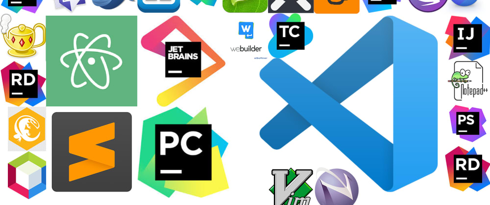

Common possible paths for basic computer users to improve their skills include:
trying to type faster
widening knowledge in types of files and their uses
mastering file creation and common lines
introducing the documentation and decoration text, printing
recording excel spreadsheets and practical using
combining all word, image and other data into a slide and presentation
uploading, saving the files created online, offline or via removable disks
regular diagnosis to the computer and up-to-date modernizing
After the path had completely been done, the user can either advance his skills or work as an intermediate office worker with standard salary. He can even teac the youngsters for the basic skills he had known. "Microsoft Office" is the most user-friendly and widely used as well as the most efficient program brand for certain skills learning process.
Click this image to get to Microsoft Office. ⇐⇐⇐
⇛
In my opinion, it might be sufficient for the case of user levels (0), and (1) to reach the level (2) standard. This level can even be regarded as the universal level nowadays which everyone ought to reach.
In case if the user wants to broaden his horizons upon the alternative platforms, the following can be mentioned.
For the case of office users and editors, they would have an opportunity to advance their skills and trying to know all branches in depth. On the other hand, they can learn a new skill of trying to understand more about operating systems. They are people who need to deal with computers everyday, so they should know what to fix in some cases immediately not to have difficulties in workplace. They may have a taste of Linux OS experienxe as many of their job plugins are also contained in those systems and they can even work more smoothly, especially studio editors.
↞ Click me to get to site!!!
By trying to understand more about computers, some computer errors can be solved easily without much inconvenience. He will also know what to and how to upgrade his computer by hardware. e.g increasing RAM slots, extending memory, replacing SSD with HDD, upgrading CPU, etc. After certain skills had been owned by a user, he might even become a computer pro in his local area.
The case of programmers has an endless route consisting of a large variety of programming languages. The fundamental and easiest way of learning to code is
website authoring first
backending the second
only after, coding the whole project
managing the servers, and
arranging the data.
The five paths of learning coding and its language components.
Developers can increase the number and quality of languages they have accomplished, linking one another, practising many sample projects, and finally setting up an own perfect website, them apps, ending till the system programs.
A developer might need a good coding environment as well as the tools which are open source and easily accesible nowadays. Many consoles and code editors as well as debugging and live serving projects can be coded both offline and online. Co-ordination between developers is becoming more stronger and the big-coming developed technological world is getting closer to us everyday.

For the case of security and local network as well as data storage more improvements are being done daily, ensuring more security of the locked data, and peeping out the information. Moreover, fingerprints which had been the lately introduced security; is being extended into eye analysis, voice identification and even face detecting. They have already upgraded to a certain level and the use of artificial intelligence technology is becoming widespread which all base on computer written programs as well as the hardware additional developments. Indeed, the paths by which users follow end up by the result causing our entire world upgraded. Believe it or not, humans will communicate woth computers one day as the way we do now to each other.